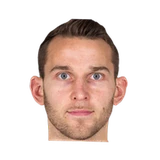

“Respecting everyone on the court. Hell, Stauskas gets 18 points in the first half. Just having our antennas up and taking more pride defensively.”

What NBA players and coaches have said about Nik Stauskas
3 quotes about Nik Stauskas from 3 players, coaches and executives, newest first. Each one links to its original source.
Quotes per season
Who talks about Nik Stauskas most
- Brett Brown1 quote
 George Karl1 quote
George Karl1 quote Rajon Rondo1 quote
Rajon Rondo1 quote
2018-19
1 quote2014-15
2 quotesBill Herenda:Karl on Stauskas:
“I think we gotta get Nik some minutes . he’s gotta get on court to get some confidence, rhythm”
Keith Pompey:Brett Brown on Andrew Wiggins pre draft:
“I thought we had him. I was expecting we were going to draft Stauskas and Wiggins.”